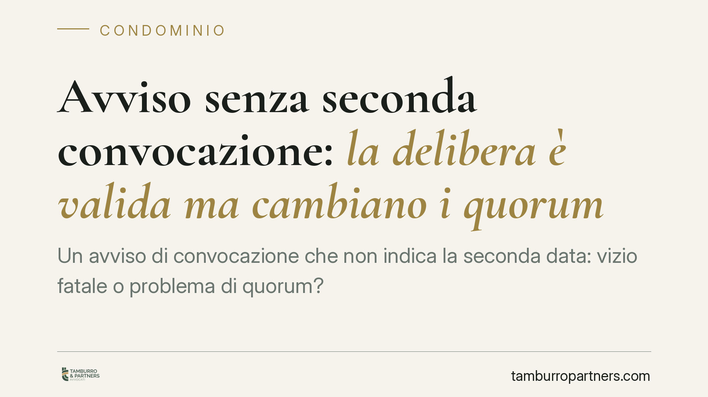

Avviso senza seconda convocazione: la delibera è valida ma cambiano i quorum
Un avviso di convocazione che non indica la seconda data: vizio fatale o problema di quorum? Secondo una pronuncia di merito, l'omissione non rende annullabile la delibera, ma impedisce di avvalersi dei quorum ridotti della seconda convocazione. Il risultato è che l'assemblea deve raggiungere le maggioranze più alte della prima. Un tema che incide sulla tenuta delle decisioni condominiali.

Il caso
La questione affrontata è ricorrente: l'avviso di convocazione dell'assemblea indica una sola data, senza prevedere la seconda convocazione. L'assemblea si tiene regolarmente, ma la delibera viene impugnata proprio per questo difetto formale.
Secondo una pronuncia del Tribunale di Napoli (sentenza indicata come n. 5036/2025), l'omessa previsione della seconda convocazione nell'avviso non rende annullabile la delibera. Produce però un effetto diverso: l'assemblea non può avvalersi dei quorum ridotti propri della seconda convocazione e deve raggiungere le maggioranze, più elevate, previste per la prima.
Avvertenza. Si tratta di una decisione di un tribunale di merito. Come tale non costituisce principio vincolante per gli altri giudici e non equivale a un orientamento consolidato della Corte di Cassazione. Il numero, l'anno e la massima vanno verificati sulla fonte ufficiale prima di qualunque utilizzo pratico. Il ragionamento esposto di seguito resta valido sul piano normativo a prescindere dalla singola pronuncia.
Inquadramento normativo
L'art. 1136 cod. civ. distingue due profili che è bene non confondere.
Il quorum costitutivo riguarda la validità della costituzione dell'assemblea (chi e quanto valore deve essere presente perché la riunione possa iniziare). Il quorum deliberativo riguarda invece la maggioranza necessaria per approvare la singola decisione.
In prima convocazione l'assemblea è regolarmente costituita con la presenza di tanti condomini che rappresentino i due terzi del valore dell'edificio e la maggioranza dei partecipanti al condominio (quorum costitutivo). Per deliberare occorre, di regola, il voto favorevole della maggioranza degli intervenuti che rappresenti almeno la metà del valore dell'edificio (quorum deliberativo).
In seconda convocazione i requisiti si abbassano: la costituzione richiede un terzo dei partecipanti e un terzo del valore; la delibera ordinaria passa con la maggioranza degli intervenuti e almeno un terzo del valore dell'edificio. Sono questi i cosiddetti "quorum ridotti".
L'art. 66 disp. att. cod. civ. disciplina l'avviso di convocazione, i suoi contenuti e i termini di comunicazione. La seconda convocazione, se prevista, non può tenersi nello stesso giorno della prima.
Vizio dell'avviso o quorum non raggiunto?
Qui sta il punto centrale, da tenere distinto.
Un vizio dell'avviso (ad esempio l'omessa comunicazione a un condomino) attiene al diritto di informazione e partecipazione e può incidere sull'annullabilità della delibera. Il mancato richiamo della seconda convocazione, invece, non lede l'informazione sul contenuto della riunione: il condomino sa comunque quando e su cosa si decide.
La conseguenza, secondo l'impostazione in esame, non è l'annullamento ma la riconduzione dell'assemblea alle regole della prima convocazione. Se in quella sede i quorum più alti vengono raggiunti, la delibera tiene. In caso contrario, è viziata per difetto di maggioranza.
Implicazioni pratiche
Per l'amministratore, l'indicazione della doppia convocazione nell'avviso non è un mero adempimento formale: è lo strumento che consente di deliberare con le maggioranze ridotte, spesso decisive nei condomini con elevata disaffezione partecipativa.
Per il condomino che intende impugnare, occorre valutare bene la natura del difetto: contestare la mancata seconda convocazione come causa di annullabilità può rivelarsi infruttuoso, mentre può avere fondamento la censura sul mancato raggiungimento dei quorum di prima convocazione.
Resta fermo il termine per impugnare: ai sensi dell'art. 1137 cod. civ. l'azione va proposta entro trenta giorni, che decorrono dalla data della deliberazione per i condomini presenti dissenzienti o astenuti, e dalla data di comunicazione del verbale per gli assenti.
Cosa fare in concreto
- Verificare l'avviso prima dell'invio: indicare sempre prima e seconda convocazione, con date e orari distinti e nel rispetto dei termini dell'art. 66 disp. att. cod. civ.
- Controllare i quorum effettivamente raggiunti e annotarli in verbale, distinguendo profilo costitutivo e deliberativo.
- Se l'avviso è carente, è opportuno procedere a una nuova convocazione formalmente corretta prima di assumere decisioni rilevanti.
- Per chi valuta l'impugnazione, è prudente inquadrare con precisione il vizio (avviso o quorum) e rispettare il termine di trenta giorni, calcolando correttamente il dies a quo.
- Verificare lo stato aggiornato della giurisprudenza, data la natura non vincolante della pronuncia di merito richiamata.
---
Contributo informativo a cura di Tamburro & Partners - Avv. Giuseppe Tamburro. Non costituisce parere legale.
Ogni condominio ha una storia a sé.
Se gestisci un'amministrazione e vuoi un confronto su una specifica questione condominiale, scrivi allo studio. Ti rispondiamo entro un giorno lavorativo.